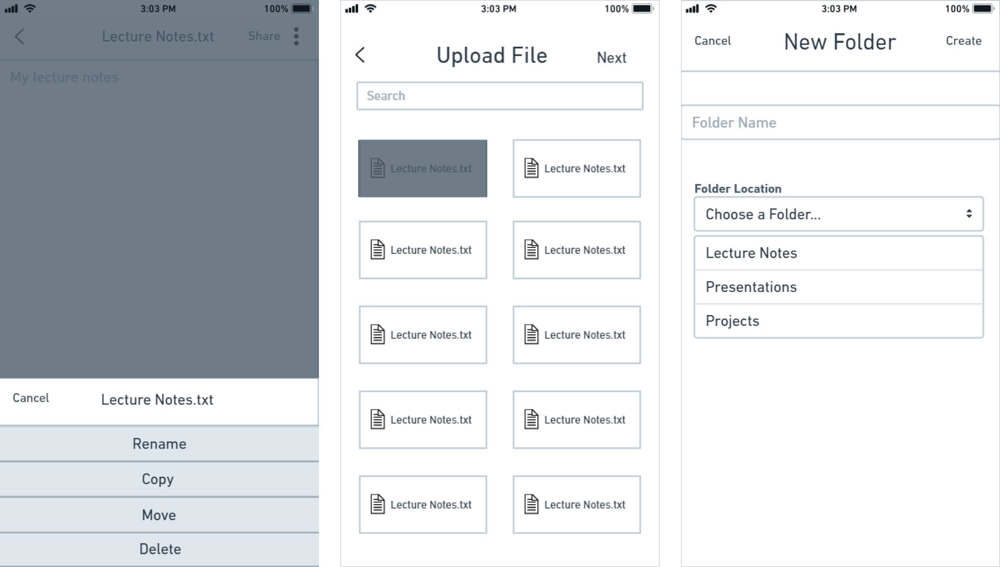

Tasked with creating a new competitor in the cloud storage market, this case study delves into the process that went behind designing the BlocCloud brand.
My client came to me with a vision of bringing people closer together through the medium of cloud storage. My client had a desire to create a cloud storage app, but at the time of consulting me, had no ideas of a brand, or a target user base.
In order to facilitate this vision I came up with a brand that would accurately portray this; BlocCloud, a cloud storage app for both desktop and smartphone. The target user base would be primarily 18-29 year olds.
This identity would take what my client believes to be the building blocks of cloud storage, the users, and combine it together with the cloud in an innovative way. I was delighted to undertake this task to bring users together through the cloud to support their everyday use.
Through competitive analyses I concluded that in order to emerge competitive I needed to focus on providing everything Google Drive and Dropbox offer at minimum. Given this, I decided to put extensive focus on ensuring that BlocCloud provides a solid cloud storage experience for the user. My reason for this was that I felt users wouldn’t be interested in a new cloud storage competitor if it didn’t offer as good of an experience that they offer. For instance, Google Drive offers 15 GB of free storage as opposed to Dropbox’s 2 GB.
If BlocCloud was to stand out, I believe it would need to offer free storage amounts similar to Google Drive. Given this, I decided to put extensive focus on ensuring that BlocCloud provides a solid cloud storage experience for the user.
I transitioned into user research. I set out to find what users were currently using and how. Through user surveys I managed to establish a target user base that the client had not yet decided on. I discovered that 60% of respondents were in the 18-29 year old age range. To my surprise, I found out that 53% of respondents make use of cloud storage apps through both desktop and smartphone apps as opposed to making use of only one. My client wanted a strong focus on a social aspect of the app, however through surveys I also managed to establish that our potential users were much more interested in the storage aspects as opposed to potential social aspects.
I developed user flows in line with the data I received from my user research as well as the competitive analyses. I determined the high profile features that I needed to work on were onboarding, uploading and sharing files/folders, and organizing files/folders.
With this in mind I went to work on developing user personas and user stories for my target user base; 18-29 year old users. My primary users are college age and working age individuals that would greatly benefit from the use of a decent cloud storage app. The user stories I developed fell in line with the user flows I came up with earlier. I focused primarily on what users would outright need in order to effectively deliver on MVP status; that being the high profile features I touched upon previously.
Through the help of user flows I was able to come up with wireframes that outlined the major features I needed to include. My main goal in this step of the design process was to come up with displays that were relatively simple to follow and understand. I was easily able to translate my sketches into wireframes and proceeded to test them to ensure I was on the right track. My first round of testing proved to be a success; users were easily able to understand and figure out how to navigate the screens on their own with little to no help.
Most of my users required a bit of encouragement to speak up on how they felt navigating the screens, but their thoughts were relatively similar. Navigating the screens was a thoughtless task in the sense they did not have to put much thought into how they were supposed to navigate. They also were able to complete the tasks I asked of them, uploading files, sharing files, and signing in with minimal effort. After testing my wireframes I was ready to move onto the next stage of my problem solving process. Given the feedback was majorly positive I felt confident moving into this stage. However I would find out that there would be many revisions that would be experienced before settling on the final design reached.
The branding step of the design process was arguably one of the most crucial parts. Designing the logo was an important task due to it representing the BlocCloud brand as a whole. The logo needed to convey to users feelings of simplicity; so that they would feel calm and content that this product is something they can use without difficulty.
I wanted to also convey feelings of trust through the color scheme with a usage of blue, so that users would feel that the BlocCloud brand would give them the security they need with their file storage. In my first high quality iteration I decided to focus on a simple cloud design in order to convey to users that BlocCloud is a product related to cloud storage. However, opinions were mixed.
Those that did not like the design stated it could stand to look a bit more professional, so I went back and came up with another simple design incorporating the use of a cloud logo and also using a darker blue and light grey as opposed to a light blue and white that I used in the first iteration. I would soon come to find out that while this logo was well received, it had readability issues due to the light grey. I had wanted a close color to white in order to convey simplicity, but I felt that the logo itself was sufficient enough to convey that. As a result, I settled on using a lighter blue in place of the grey that you see in the final design.
After the work on branding was finished, I moved on to the next round of user testing. The first round of high fidelity prototype testing would see mixed reviews from users. While they were able to complete the tasks asked of them, there were users that were very vocal about the discontent they had with the way information was presented to them. This was prominent in the first iteration of the desktop landing page, which originally gave no indication to the user what BlocCloud even was. As shown in the photos above, I went back to work to design a new landing page for the desktop version of BlocCloud so that I could run preference tests.
When showed both screens, 90% of users felt the second one looked much more neat and professional as opposed to the first screen I had designed; which was the one that had caused users confusion. Even those that were ok with the first design expressed their sentiments that the second screen worked far better as a landing page. I changed the screens such that the landing page leads to the screens with proper form fields, which users felt flowed much better.
One of the biggest oversights I had in smartphone development was the inclusion of a back button during the mobile sign up process.
The users that commented on this fact were pretty vocal about the annoyance caused by being unable to go back in the event they mis-clicked a wrong button. My reason for this oversight was that I wasn’t sure how to include a back button without having the screen appear too crowded. As before with the desktop preference testing, I went back and designed another screen for smartphone to compare with users in order to get an idea of which worked best. 85% of users felt that the second screen worked much better in comparison to the first, while 15% were undecided, or felt that either screen worked sufficiently. Given this info I decided to end up using the second screen due to the space it provided with the social media sign up options.
While a back button would have been included in either final version, I felt that giving more space would reduce the chances of users accidentally selecting the wrong option and lead to less frustration overall.
The latest implementation of my high fidelity prototypes proved to be very successful, and most importantly users were able to complete all the tasks asked of them without experiencing extensive difficulty. I believe I set myself to establish a solid cloud storage brand that can be further expanded upon to realize the client’s vision. From this project I learned just how valuable testing and user feedback is in the design process. Without the feedback I gained I would not have been able to deliver effectively on the BlocCloud brand. If there were anything I could have implemented differently in the design process, it would be making sure I favored more functionality over design in my first iterations of high fidelity mockups.
As a designer I want to strive to create designs that don’t lose functionality in the transition from wireframes to high fidelity mockups.